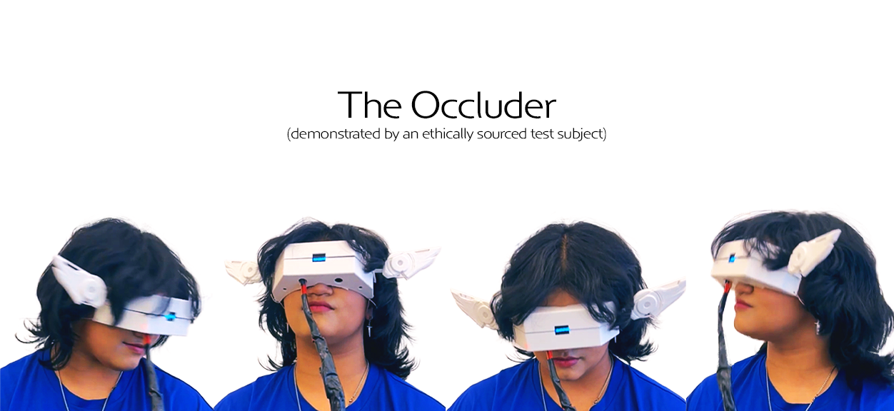
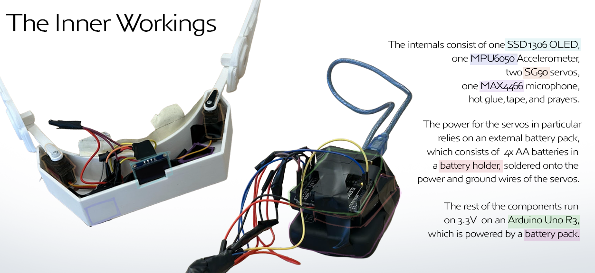
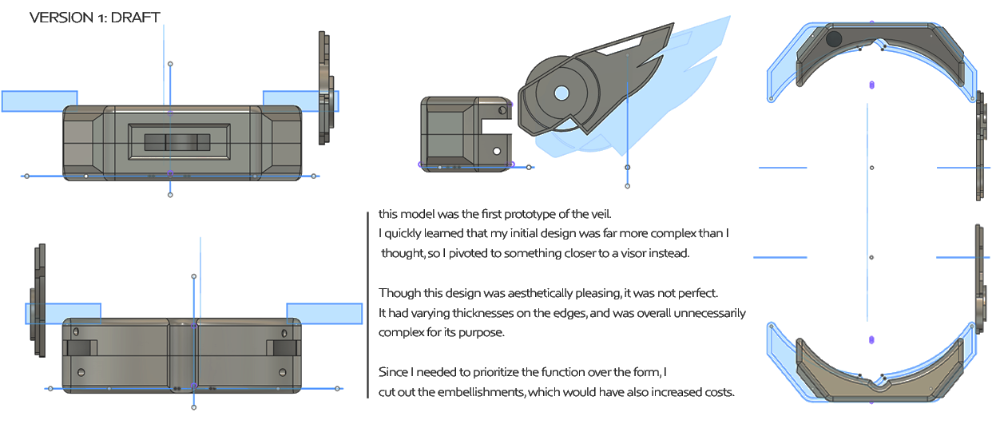
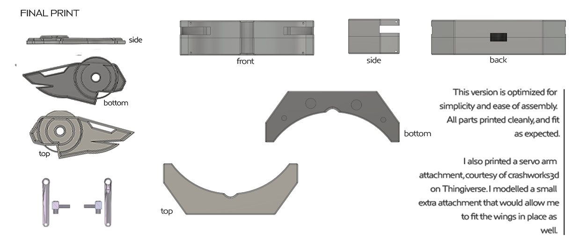
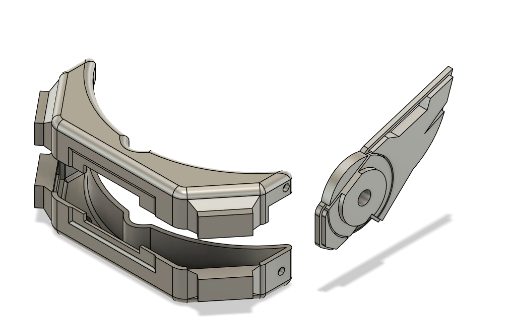
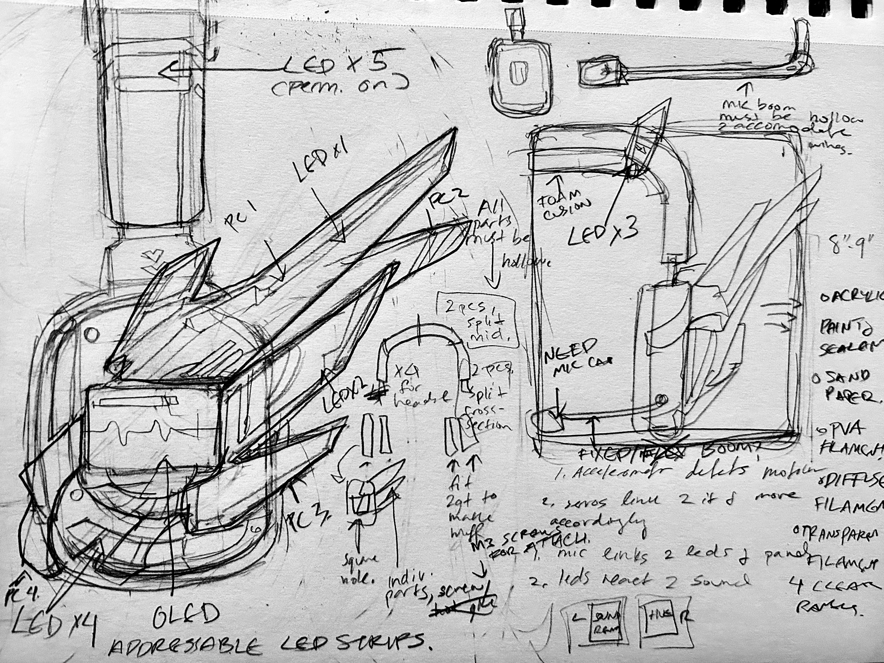

The Occluder is a wearable electronic device exploring sensory interference and augmentation. It combines motion, sound, and visual feedback through servo-driven elements, OLED display, and embedded sensors.

Early Fusion drafts showing initial layout.

Final version which got printed & assembled.

3/4 shot of the earlier design.

Initial sketch! I had actually started out trying to make a pair of headphones. It changed a lot!
Overview
The Occluder is a wearable system that restricts the wearer’s vision while introducing responsive motion and visual feedback driven by sound and body movement. The device operates as a closed sensory loop, replacing visual input with kinetic and signal-based output.
Interaction
Ambient sound is captured through a microphone and visualized as a live waveform on an onboard OLED display. Body motion and tilt are read via an accelerometer, driving subtle servo-based movement of wing-like extensions.
Movement is intentionally restrained. Rather than dramatic reaction, the system maintains low-amplitude motion that persists even at rest, creating the impression of an autonomous, breathing mechanism.
Technical Implementation
- MAX4466 microphone for real-time sound level analysis
- MPU6050 accelerometer for motion and orientation sensing
- Dual servo motors mapped to sensor input for kinetic response
- SSD1306 OLED display rendering live waveform data
- Arduino-based control loop coordinating concurrent inputs and outputs
Constraints
Vision is fully occluded and no explicit feedback or instructions are provided. The wearer must rely on external guidance and the environment, focusing on intrapersonal communication rather than a person as their own system.